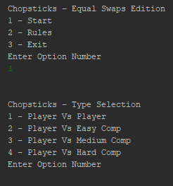

About the Chopsticks Program
Click for GitHub Repo
Chopsticks Background
Chopsticks is a hand game played by usually two people.
Click here to check out the wiki page for rules and general info.
Rules Modification
The version used in this program is a Swaps variation.
The Swaps variation adds onto the split functionality.
Once per turn the player can swap any fingers from one hand to the next.
This allows the swapping of identical fingers (1,1) and no fingers (0,1 -> 1,0).
Development Technologies
Language: Java
IDE: IntelliJ
Program History and Motivation
First attempted to program this game in 2019 using Python 3. I got a decent chunk developed but for some reason I let it collect dust.
I originally called the game: Palm Warz, but that was before I found the origins on the Wiki.
Couple years later I found the Palm Warz project.
I decided to do a little research and revive the project using Java.
I would like to say the Chopsticks program is now complete from just a few days of development.
Program Functionality
-Player versus Player Mode
-Player versus Bot Mode with 3 Difficulty Settings
-Excessive Input Error Handling
Final Thoughts
I had a lot of fun developing this project. Java was my focus language to try and get more of an Object-Oriented approach. I don't think I hit that area well, but it allowed me to scratch the surface more.
I found it interesting in creating a bot and determining how to make it smarter. What is implemented isn't the smartest but that could change with a few lines.
This little program I developed is the minimum of what I want to create for this game. In years to come I hope to eventually revive this program once again and develop it cleaner, smarter, and with a GUI interface.
Screenshots
Screenshot of Title and Type Screens:

Screenshot of a Bot doing a Knock Out!:
Screenshot of the Bot Winning:
Click for GitHub Repo